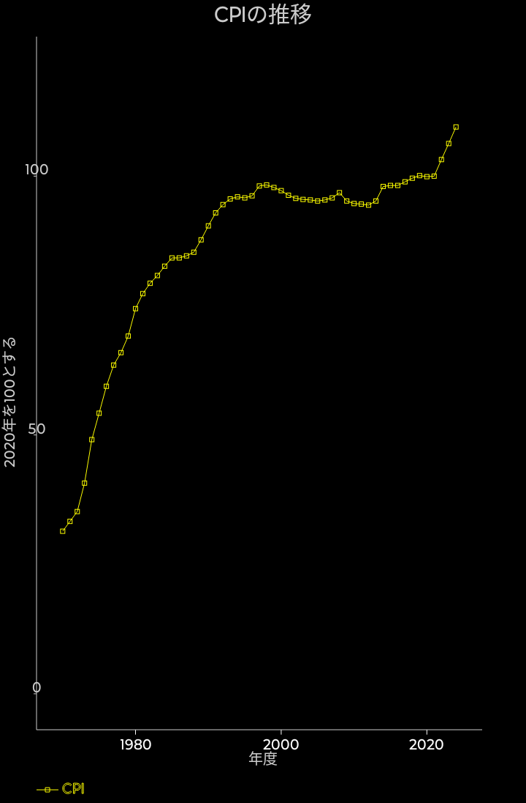

CPIの推移

デフレだ物価高だといろいろ言われる事が多い昨今です。CPIの推移を見てみましょう。
2020年にバスケットの変更があったので2020が100となっています。
大まかな傾向としては1997年までは上昇を続け、以降マイルドに下がり、2012年以降はわずかに上昇に転じています。
また、86年くらいから始まると言われてている、いわゆるバブル期は、それまでよりもむしろインフレ率は少し低いのも見て取れます。
90年代の中ごろまでと比べると近年の差は微々たるもので、大まかにはほぼ横ばいと言ってしまえると思います。
グラフでは一番最後の2022年ではピコっと上がって、前年比3%程度の上昇となっています。
久しぶりに日銀のターゲットである2%を越えています。
2022年の時点でも物価の上昇傾向は経済統計でも確認出来るようです。